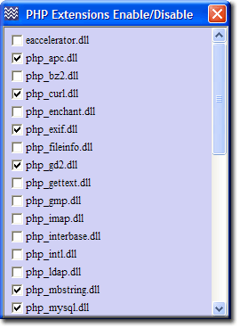

PHP - Introduction
PHP is a general-purpose scripting language designed for creating dynamic web pages. The Apache server uses a PHP processor module to generate the final web page being served. It interprets code embedded into HTML documents. PHP has been pre-configured for production and development. One of Unicontroller's sub-menus allows you to easily switch between the two configurations. This page covers the configuration sub-menu and its additional features for maintaining PHP.
Edit Basic Configuration
Server Configuration > PHP > Edit Basic Configuration
This menu item allows you to change commonly configured PHP options.
|

|
Note 1: After making changes, click the corresponding update button. This writes the modified data to the associated configuration file.
Note 2: Changes to the current configuration are used next time the servers are started.
Note 3: For development and production configuration files to become effective, you need to switch over the appropriate file (see switching.) and restart Apache.
Note 4: Do not enable short open tags. Doing so will conflict with other languages such as XML’s open tag. For detailed information, and the exception, see Short open tags
Directly edit configuration files
The following menu items allow you to edit the specific PHP configuration file in notepad.
Edit Current Configuration file: php.ini
Server Configuration > PHP > Edit Current Configuration file: php.ini
- File path: UniServer\usr\local\php\php.ini
- This configuration file is the active configuration. When Apache is started, the contents of this file will configure PHP.
- Note 1: When either production or development configuration file is selected, as explained in the next section on switching, any edits in this file will be overwritten. Consider changes to this file as temporary. This is ideal for testing without making permanent changes.
- Note 2: The initial version of the current configuration file is a copy of the production version.
Edit Production Configuration file: php_production.ini
Server Configuration > PHP > Edit Production Configuration file: php_production.ini
- File path: UniServer\usr\local\php\php_production.ini
- This configuration file is pre-configured for production use.
- Note: In a default installation of The Uniform Server, the current configuration is a copy of this file (php.ini = php_production.ini).
Edit Development Configuration file: php_development.ini
Server Configuration > PHP > Edit Development Configuration file: php_development.ini
- File path: UniServer\usr\local\php\php_development.ini
- This configuration file is pre-configured for development use.
- Note: Errors will be displayed in a user's browser.
Edit Command Line Configuration file: php-cli.ini
Server Configuration > PHP > Edit Command Line Configuration file: php-cli.ini
- File path: UniServer\usr\local\php\php-cli.ini
- This configuration file is pre-configured for command-line operation.
- Note: Do not change the existing directives. These are required for correct operation of UniController's command-line scripts. You can add any directives you want that are not included.
Configuration file switching
The following two menu items allow you to easily switch between PHP production and development configuration files.
Switch to Production Configuration file
Server Configuration > PHP > Switch to Production Configuration file
- File path: UniServer\usr\local\php\php_production.ini
- This configuration file is pre-configured for production use.
- Note 1: In a default installation of The Uniform Server, the current configuration is a copy of this file (php.ini = php_production.ini).
- Note 2: Errors are not displayed; these are directed to Apache's log file.
- Note 3: Switching overwrites the php.ini configuration file.
- Note 4: After switching you must restart the servers or the new configuration will not be recognised.
Switch to Development Configuration file
Server Configuration > PHP > Switch to Development Configuration file
- File path: UniServer\usr\local\php\php_development.ini
- This configuration file is pre-configured for development.
- Note 1: Errors are displayed in a user's browser and also directed to log file
- Note 2: Switching overwrites the php.ini configuration file. The php.ini file is replaced by a copy of php_development.ini.
- Note 3: After switching you must restart the servers or the new configuration will not be recognised.
PHP Accelerators
The Uniform Server provides two PHP accelerators: APC and eAccelerator. The following UniController sub-menu allows you to enable or disable these accelerators and open their corresponding controller in your default browser.
Server Configuration > PHP > PHP Accelerators
|
eAccelerator
APC
|

|
Note: After enabling or disabling either accelerator, the Apache server must be restarted in order for the new configuration to become effective.

APC control panelThe Alternative PHP Cache (APC) is a free and open opcode cache for PHP. It is a robust framework for caching and optimizing PHP intermediate code. The Uniform Server's default installation has APC disabled. The APC control panel is shown on the right. For detailed information, see PHP APC |

|
PEAR control panel
Server Configuration > PHP > PEAR control panel
The PHP Extension and Application Repository, or PEAR for short, contains re-usable code. This menu option opens the PEAR Controller. It consists of two buttons, operating as follows:
Note 2: For a short tutorial on how to use PEAR, see Using PEAR Frontend Note 3: You can also view the PEAR Front-end by entering the following into your browser: http://localhost/us_pear/index.php |

|
PHP Extensions Enable Disable
|
The following sub-menu allows you to enable or disable PHP extensions: Server Configuration > PHP > PHP Extensions Enable/Disable
Note: After changing state you must restart the Apache server for the new configuration to be recognised. Files modified: |
 |
Note: PHP mail() function
Uniform Server has been pre-configured for sending mail using the open source msmtp client. For reference the configuration section contained in confiuration files php.ini, php_development.ini and php_production.ini is shown below:
; For Unix only. You may supply arguments as well (default: "sendmail -t -i"). ;sendmail_path = "/usr/bin/sendmail.exe -t" sendmail_path = "**path**/UniServer/msmtp/msmtp.exe --file=**path**/UniServer/msmtp/msmtprc.ini -t" ; Force the addition of the specified parameters to be passed as extra parameters ; to the sendmail binary. These parameters will always replace the value of ; the 5th parameter to mail(), even in safe mode. ;mail.force_extra_parameters = ; Add X-PHP-Originating-Script: that will include uid of the script followed by the filename mail.add_x_header = On
Note: **path** is automatically set to where Uniform Server is located; for example: C:/Coral_4
Before using the PHP mail function, the msmtp client must be set up. See the MSMTP page for details.